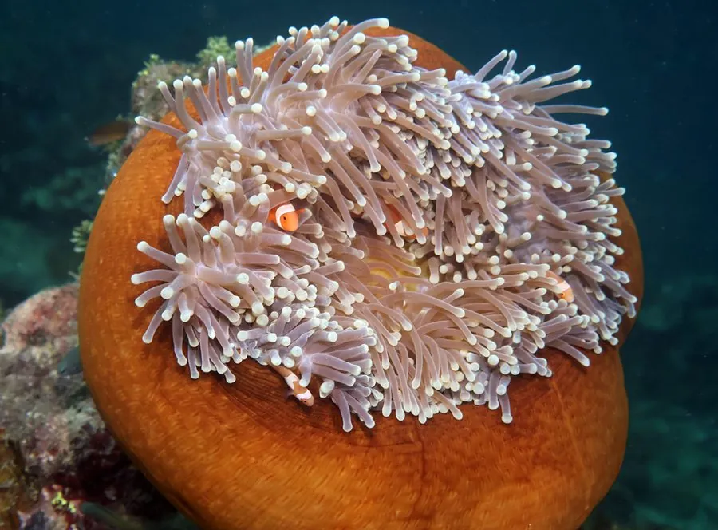

其他无脊椎动物 · 动物界
华丽海葵 Heteractis magnifica

触手密集、体盘鲜艳的大型海葵，栖于热带珊瑚礁，是小丑鱼与多种共生虾蟹的宿主，触手具刺细胞。
- 分类
- 门刺胞动物门纲珊瑚纲目海葵目科大海葵科属岩海葵属
- 栖息环境
- 热带珊瑚礁礁坡上部、礁坪与潟湖浅水区
- 地理分布
- 印度洋至太平洋热带海域，自红海至澳大利亚北部、密克罗尼西亚
- 保护级别
- 常见种，无专门保护级别；珊瑚礁退化与采集是威胁
物种志
华丽海葵的口盘直径可达四十至五十厘米，体柱粗壮，口盘平展，上面密布细长柔软的触手，颜色从紫红、粉红到橙黄、淡绿不等，触手尖端常带淡色或紫色。它靠基盘牢牢附着在礁石上，体柱能收缩成球状，缩起来时几乎看不见触手，只剩一团彩色肉球。触手上密布刺细胞，能麻痹接触的小动物。
它分布于印度洋至太平洋的热带珊瑚礁，从红海、东南亚到澳大利亚北部和密克罗尼西亚，栖息在礁坡上部、礁坪和潟湖的浅水区，喜水流较强、光照充足处。它与虫黄藻共生，同时捕食浮游生物和小鱼。小丑鱼对它的刺细胞有免疫，会在触手间躲避天敌，多种虾蟹也与之共栖。潜水者触碰它会引起皮肤红肿刺痛，应保持距离。
形态与习性
- 口盘直径可达四十至五十厘米
- 触手细长密集，色彩鲜艳，尖端带淡色
- 共生与虫黄藻共生，并为小丑鱼提供庇护
- 食性捕食浮游生物与小鱼
- 防御触手密布刺细胞，可致皮肤红肿
- 观察提示潜水时勿触碰，保持距离
趣味知识
- 小丑鱼能在它触手间自由穿梭，因为体表黏液让刺细胞认不出它是猎物。
- 它一缩起来就变成一团彩色肉球，触手全收进体内。
- 潜水时不小心蹭到它，皮肤会红肿刺痛好几天。